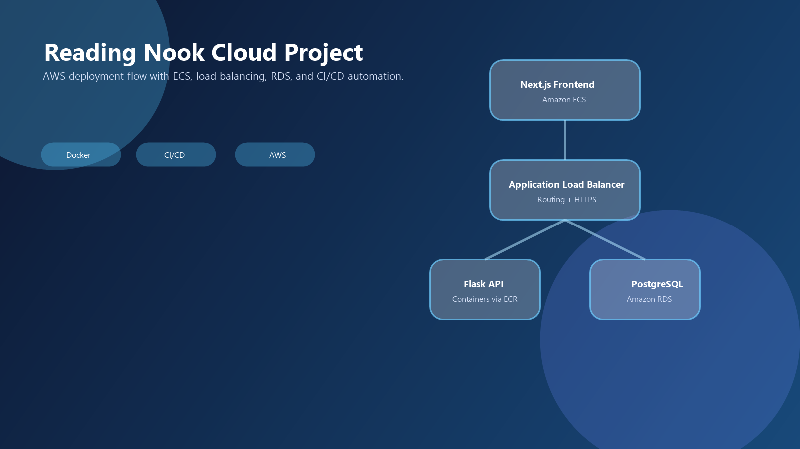

Reading Nook Cloud Deployment Project
A cloud architecture and deployment project that moved a multi-service application into AWS using containerized services, managed infrastructure, and CI/CD automation.

Overview
This project involved migrating and deploying the Reading Nook application into the cloud. The system included a Next.js frontend, a Flask REST API backend, and a PostgreSQL database. The deployment used containerization along with AWS services such as ECS, ECR, RDS, and load balancing.
What worked well
The strongest part of this project was understanding how the pieces fit together. The architecture was not just one app on one server. It involved separate services, cloud-managed database hosting, image storage, and a CI/CD workflow through GitHub Actions to keep deployments more consistent.
Challenges and learning
This project helped me better understand modern deployment thinking. Instead of only focusing on writing the application, I had to look at how services are hosted, how traffic is routed, how secrets should be handled, and why certain infrastructure choices reduce maintenance or improve security.
Why it belongs in this portfolio
It shows that my learning in the program was not limited to writing code. This project demonstrates cloud awareness, architecture reasoning, and a better understanding of how real applications get deployed and maintained.